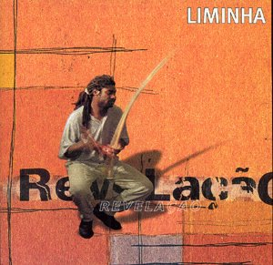

Альбом «Revelação» — Mestre Liminha
Зима на дворе. Тёмными зимними вечерами так хочется окружить себя тёплыми вещами, хорошими воспоминаниями и ламповой музыкой.
Среди альбомов музыки капоэйры не так уж и много таких записей, достойных упоминания в одном предложении с винилом и ламповым звуком.
Сегодня один из таких: «Revelação» от Mestre Liminha. Одна песня из него была уже опубликована у нас.
Помимо музыкальной ценности альбом несет и хорошую смысловую нагрузку. В нем мастер рассказывает о многом в музыкальной форме, касается при этом вопросов обучения, истории капоэйпы, женщинах в капоэйре. Поднимается также вопрос вранья, воровства и некомпетентности. Как говорится «Слушающий — услышит».

Тексты всех песен с альбома можно найти на Сapoeiralyrics.info.
1 — Arte Popular
2 — Saculejo do Navio
3 — Quem é bom, já nasceu feito
4 — Quero aprender, me ensina
5 — Fonte Nova
6 — Não critique faça o seu
7 — Meninos Guerreiros
8 — Vem Ver
9 — A mulher na capoeira
10 – Atleta da língua"
11 – Dendê
12 – Ladrão de Cantiga
Ознакомиться с этим альбомом можно здесь.
И раз уж я добавил прямую ссылку, не могу не добавить следующее…
Помните о том, что диски лучше покупать, мастера капоэйры люди не богатые, это вам не 50 cent или Тимати, которые не заметят если пару человек спиратят. Лично я, в случае, если мне альбом нравится стараюсь при подвернувшемся случае его купить. То же самое касается и книг, даже прочитав в электронном виде, если что нравится — лучше бумажную, чтобы помочь автору и сподвигнуть его продолжать писать.
Mestre Liminha покинул наш мир несколько лет назад, но это не только о нём, а вообще о совести и нашей ответственности. Свободный интернет — это очень хорошо. И очень хорошо, когда свободный интернет помогает обмениваться информацией. А ещё лучше, когда достойные люди благодаря свободному интернету получают признание и вознаграждение, минуя всяких звукозаписывающих гигантов и прочие издательства, обкрадывающие творцов. Почему бы и не купить на семинаре любимый диск напрямую у мастера, вдруг именно эти деньги помогут ему через некоторое время купит лекарст и справиться с тяжелой болезнью?